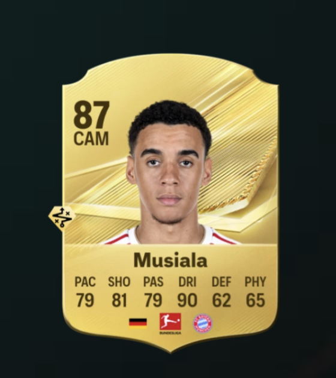

About the Digital Object
This digital object is EA SPORTS FC 27's representation of
Jamal Musiala. The game represents his soccer performance
through numerical ratings and categories such as pace,
shooting, passing, dribbling, defending, and physicality.
Player Metadata
- Player: Jamal Musiala
- Club: FC Bayern München
- Country: Germany
- Position: CAM
- Overall Rating: 87
EA FC Ratings
- Pace: 79
- Shooting: 81
- Passing: 79
- Dribbling: 90
- Defending: 62
- Physicality: 65
Original Sources
View Jamal Musiala's original EA SPORTS FC rating page
View the EA SPORTS FC Ratings collection